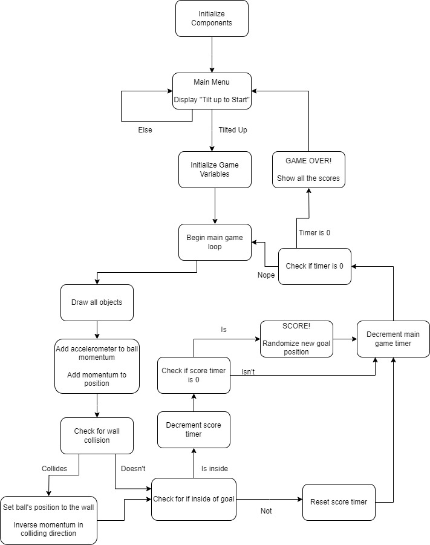
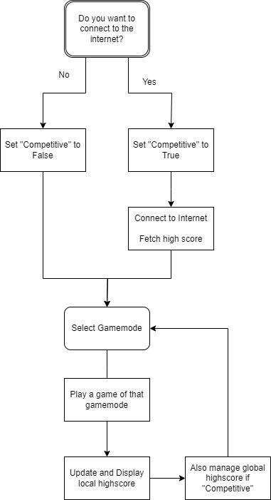

Screaming Balls Game!
EEC172 Final Project Webpage.
The website source is hosted on github.
EEC172 SQ24
Description
We have made a game that allows a user to play fully without using a traditional controller or any buttons.Our game follows a simple formula. You controll a small ball on the screen that rolls based on the tilt of the accelerometer inside of the CC3200 board. If you tilt the board heavily in a specific direction the ball will start to roll that direction. Try to make it into objectives and stay there to collect points! You can compete for a global highscore or simply play for fun offline.
The Three Gamemodes
Each gamemode is differentiated by how it utilizes the microphone.- It is a way to play this game in areas where you can't make a lot of noise. As the controls are the easiest to manage here you only get 2 points per objective.
- The ball quickly decelerates if you become quiet. You get 4 points per score in Classic.
- This meakes it extremely difficult to control, but you only need to touch the objective to score. It is still very difficult to control so you get 5 points per objective in Screamer.
Our source code can be found here in a separate github repository.

Video Demos
Presentation
Gameplay Footage
Market Survey
This style of motion controlled game is common in the mobile app store. It is particularly analagous to games such as Doodle Jump which involve the user tilting their phone to move their character while going for some king of high score. It can also be compared to Fruit Ninja, another older mobile game with "gesture based" controls (slicing through things by sliding a finger). "High Score" games that can be picked up and played easily in short bursts are great fits for on the go gaming. However, many of those games are not as popular and many will inudate users with ads or microtransactions in order to capitalize their userbase.
As of right now the mobile game space is rife with poor business practices such as bonuses for spending a large quantity of money at one time, or spending money frequently on in game purchases. This leads to more vulnerable users to get manipulated into spending more than they can reasonably afford. Our game is a return to form of the marketplace and seeks to be a game you can hand to a kid while they are waiting without worrying if they will make a bunch of in-app purchases while you are looking away. Our game does not feature any kind of in app marketplace or advertisements.
Design
Functional Specification

This diagram then demonstrates how you can set up the menus so that you can implement all of the logic around playing the game. The connect to the internet step is abstracted heavily at this phase as it is implementation specific and outside the scope of this guide here.
System Architecture
Our system works based on the following connections. The directions of the arrows represent the flow of useful data. Commands will originate from the microcontroller in order to read the signals from the accelerometer and ADC, but data is usually one way. The OLED has no physical means of communication with the microcontroller as it does not even have a MISO wire connected. The AWS connection is the only one that requires both sending and recieving data.
Implementation
CC3200 Board
All control and logic was handled by a CC3200 microcontroller unit. We utilized the board's SPI to connect with the inbuilt accelerometer, inbuilt ADC to connect with the external microphone, and wifi connectivity to enable saving highscores
Functional Blocks
AWS IoT Core
OLED Display
The OLED will display all of the information related to the game. The user has no other way to know what is going on in the game, so the screen is paramount.
Connect the + symbol on the olded to VCC on the CC3200, G goes to Ground. From there you will need to connect the SI (data input), CL (Clock), DC (explains what to do with bits), R (reset), and OC (Chip Select) from the OLED to various pins on the CC3200 so that you can give the OLED commands.
Microphone
Challenges
The most significant challenges we faced were due to the interactions of the inbuilt ADC and the internet connection
Inbuilt ADC
Our major issue from the ADC came from that we have never worked with any form of ADC before. We had a sample program built in from Texas Instruments that had the ADC go directly to the console. However, we needed the ADC to output a floating point value, so we ended up spending a lot of our time just debugging the code for that ADC and it had the behaviors of every "mic enabled" game mode each time we would edit it. At first, we had it work by configuring itself every time it was called, but that caused issues later on (see section on AWS). We eventually had everything work, but there was a struggle involved in learning how to use this new feature.
AWS and Internet Connectivity
AWS also presented many issues to us even after we were able to post and get highscores. The main issue came from the fact that AWS would simply halt the entire program if it was run after we read the microphone input. This was a notable issue for our microphone centric game. We would also recieve errors for things being defined several times within our Get function if it was placed "lower down" in the code, something which should have no meaning for functions floating in global namespace. We are still unsure why that bug happened, but the program works now!
Solution to Challenges
We ended up completely reworking the entire microphone function of the game in order to make it so our internet connectivity worked, but we also developed a failstate mode in case there is no internet access. The game can also be run completely without input from the internet! We included a choice on bootup for if the user wants to compete on the global leaderboard so that if an issue does crop up, AWS shuts down, etc our game will always at least be playable.
Future Work
Given more time, we would rework the movement system with the microphone to feel better to control, add a deeper menu with a larger variety of gamemodes, or possibly even allow for a custom gamemode where user selects challenges to make the game harder for more points (similar to the Pact of Punishment in Hades).
Finalized BOM
No. |
PART NAME |
DESCRIPTION |
Qty |
SUPPLIER / MANUFACTURER |
UNIT COST |
TOTAL PART COST |
Purpose |
|---|---|---|---|---|---|---|---|
1 |
CC3200 |
Controller for everything |
1 |
Provided by EEC172 Course |
$55.00 |
$55.00 |
Control Remote and Local Devices |
2 |
Adafruit 1431 OLED |
128x128 RGB OLED Display. SPI protocol |
1 |
Provided by EEC172 Course |
$29.95 |
$29.95 |
Display the menus or gamestate |
3 |
Adafruit MAX9814 Electret Microphone/p> |
DC output, auto background noise filtering |
1 |
Provided by EEC172 Course |
$7.95 |
$7.95 |
Measure sounds from the player |
4 |
Adafruit Premium Female/Male Extension Jumper Wires |
150mm wires for connecting everything |
1 |
Provided by EEC172 Course |
$3.95 |
$3.95 |
For connecting the CC3200 to the Breadboard |
5 |
Half-Size Breadboard with Mounting Holes |
A normal breadboard, Adafruit sells this one |
1 |
Provided by EEC172 Course |
$5.00 |
$5.00 |
Hub for all the different connections |
TOTAL PARTS |
5 |
TOTAL |
$101.85 |
|
TOTAL PARTS (Excluding Provided) |
0 |
TOTAL (Exluding Provided) |
$0.00 |
||||